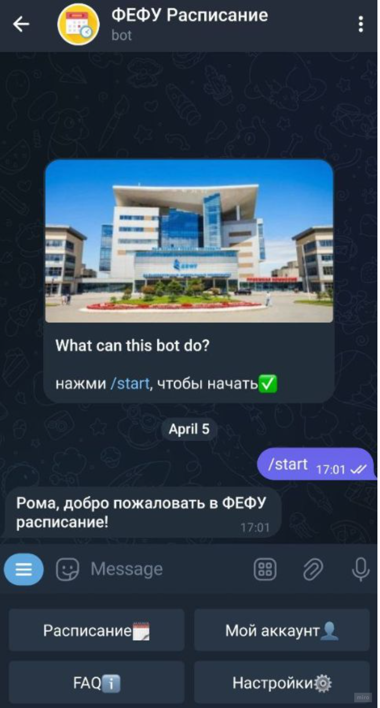
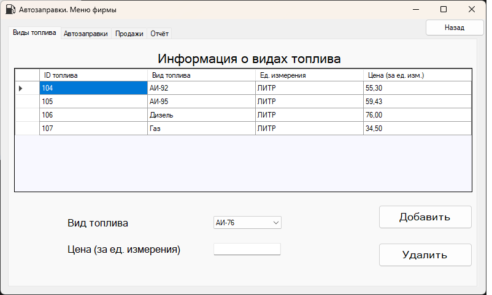
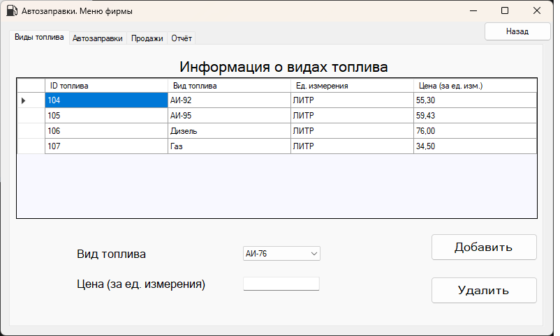

GitHub
GitHub
 VK
Telegram
VK
Telegram
О себе
Роман, 19 лет, студент 3 курса ДВФУ Института Математики и Компьютерных Технологий направления подготовки бакалавриата "Программная инженерия".
На 1 курсе участвовал в ICPC CodeForces с командой единомышленников в рамках "CodeWork", который проводился в стенах ВУЗа.
Участник гранта ESP Academic Grant с темой "Anomaly Detection on Ethereum P2P Network Using LLM" (заявка находится на рассмотрении).
Участник программы Студенческий стартап с темой "LLM (Large Language Model) для проведения собеседования потенциальных сотрудников" (заявка находится на рассмотрении).
Участник хакатона "Tender Hack" 2024 года.
Соавтор статьи для региональной научно-практической конференции (ДВФУ). Секция: "Информационные технологии и искусственный интеллект". Тема: "Выявление уязвимостей в смарт-контрактах с помощью глубокого обучения".
Опыт работы
Мои навыки
- Чтение/написание документации
- Хорошая математическая база
- Базовые навыки HTML/CSS/JavaScript, препроцессоры pug/stylus
- Базовые навыки работы с 1С:Предприятие
- Знание базовых алгоритмов и структур данных
- Чтение/построение ER-диаграмм. Написание SQL-запросов, работа с БД (СУБД - MySQL)
- Разработка приложений с пользовательским интерфейсом (GUI) с помощью WinForms на платформе .NET Framework версии 4.7.2 (C++/C#)
- Написание телеграмм-ботов на базе библиотеки Aiogram V3, работа с FSM (Python)
- Работа с БД - sqlite3 (Python)
- Парсинг/работа с библиотекой requests (Python)
- Работа с web3.py (Python)
Мои проекты
-
FEFU расписание
Бот для студентов ДВФУ для составления расписания. Написан на добровольных началах для студентов. Пет-проект, который еще находится на стадии разработки (осталось дописать админ-панель). Работа с библиотеками aiogramV3, redisStorage, FSM, sqlite3, asyncio.
Дополнительная информация:
-
Детская игра: "Смотри и запоминай!"
Простая детская игра, разработанная с использованием библиотеки PyGame. Игрокам нужно смотреть и запоминать расположение карточек на экране. Есть режим для 1 и 2 игроков, победитель определяется по количеству набранных очков. Разрабатывалась в рамке прохождения летней практики на 1 курсе.
-
Task-manager
Приложение для управления задачами, разработанное с использованием WinForms и ЯП C++. Помогает организовать и отслеживать задачи. Разрабатывалась в рамках прохождения дисциплины "Стандарты и технологии программирования"
-
База данных автозаправочной станции
 
Данный проект представляет собой приложение для управления базой данных автозаправочной станции. Работа с пользователями. Используется пакет MySql.data из NuGet для взаимодействия с базой данных MySQL. Интерфейс пользователя разработан с использованием WinForms, ЯП - C#. Разрабатывалась в рамках курсовой работы.
-
База данных библиотеки
Система управления базой данных библиотеки. Реализован с использованием структур данных: КЧ-дерево и динамическая хеш-таблица. Интерфейс пользователя разработан с использованием WinForms, ЯП - C++. Разрабатывалась в рамках курсовой работы.